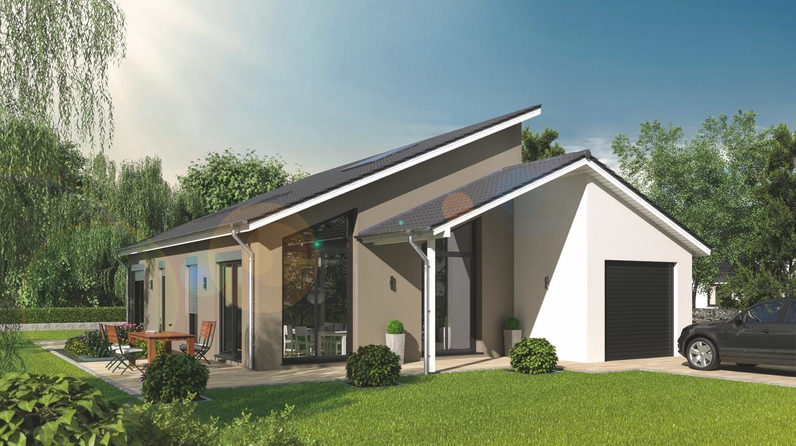

Haus Barth
Wohnen auf einer Ebene, Licht bis unters Dach: ein Bungalow, der Barrierefreiheit und Architektur zusammenbringt.

Projektdaten
- Fertigstellung
- 2018
- Typ
- Bungalow, versetzte Pultdächer
- Bauweise
- Massivbau
- Besonderheit
- Wohnen auf einer Ebene, Glasgiebel bis unters Dach
- Weg
- 15 Meilensteine, termingerecht
Die Aufgabe
Die Bauherren wollten alles Wichtige auf einer Ebene — ohne dass es nach Kompromiss aussieht. Zwei gegeneinander versetzte Pultdächer gliedern den Baukörper und schaffen im Wohnbereich Raumhöhen, die man einem Bungalow nicht zutraut.
Die Umsetzung
Der verglaste Giebel unter dem höheren Pultdach holt das Tageslicht tief in den Wohnraum, die integrierte Garage hält die Wege kurz. Massiv gebaut, schwellenlos geplant — ein Haus, das mit seinen Bewohnern älter werden darf.